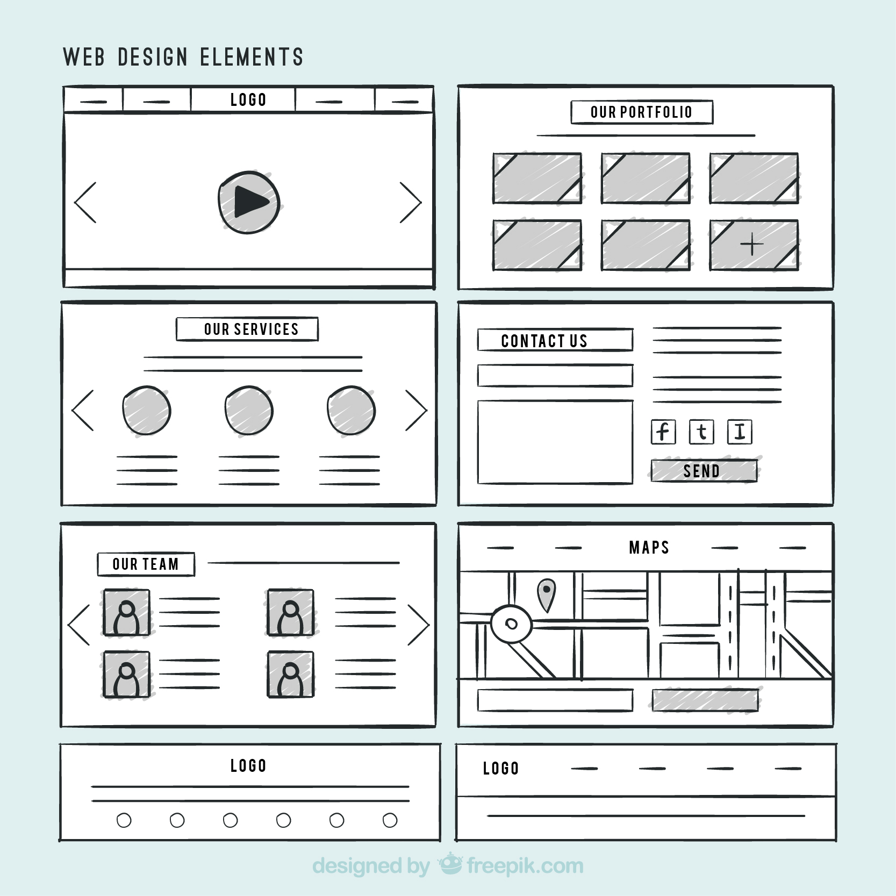

What is the purpose of a README file?
A README file is the foundational documentation
for a software, dataset, or coding project.
It serves as a project's "front door," designed to help users quickly understand what the project does,
how to install and use it, and how to contribute
Read more

What is a Wireframe?
A wireframe is a visual guide that represents the skeletal framework of a website or application.
It outlines the layout, content, and functionality of a page before any design or coding is done.
Read more

What is a Branch in Git?
A branch in Git is a lightweight movable pointer to a commit.
It allows you to diverge from the mainline of development and work on features, experiments, or bug fixes
without affecting the main codebase.
Read
more